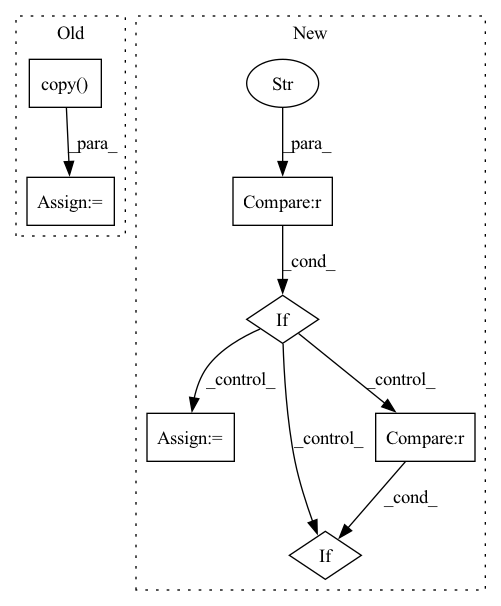

Pattern ID :11336
Before Change
if self._cfg is None or self._cfg.type != "epoch":
return
cfg = self._cfg.copy()
cfg.progress = engine.epoch_in_stage
cfg.max_progress = engine.cur_stage.epochs
self._update_lr(engine, cfg)After Change
else:
lr_groups = self._base_lr(engine)
if self._warm_cfg is not None and self._warm_cfg["type"] == "epoch" :
if engine.epoch_in_stage < self._warm_cfg["steps"]:
progress = 1 - engine.epoch_in_stage / self._warm_cfg["steps"]
lr_groups = self._warmup_lr(lr_groups, progress)
self._set_lr(engine, lr_groups)
elif engine.epoch_in_stage == self._warm_cfg["steps"] :
self._set_lr(engine, lr_groups)
def before_train_iter(self, engine):In pattern: SUPERPATTERN
Frequency: 3
Non-data size: 7
Instances Fragment ID: 38798753
Project Name: yeliudev/nncore
Commit Name: 11d6624faa51729818c1b4f455fd2285c25f1126
Time: 2020-04-11
Author: yeliudev@gmail.com
File Name: nncore/engine/hooks/lr_updater.py
M Class Name: LrUpdaterHook
N Class Name: LrUpdaterHook
M Method Name: before_train_epoch(2)
N Method Name: before_train_epoch(2)
M Parent Class: Hook
N Parent Class: Hook
M File Name: nncore/engine/hooks/lr_updater.py
N File Name: nncore/engine/hooks/lr_updater.py
M Start Line: 60
M End Line: 67
N Start Line: 80
N End Line: 96
Before Change
), "Before calling the updater you must call the population initializer `self.initialize_population()`"
// Store elite population
old_population = self.population.copy()
num_elite = int(self.population_size * elitism)
elite_indices = np.argpartition(rewards, -num_elite)[-num_elite:]
elite_population = old_population[elite_indices]
After Change
:return: the updater log
// Store elite population
if self.population_type == "actor" :
old_population = self.model.numpy_actors()
elif self.population_type == "critic" :
old_population = self.model.numpy_critics()
num_elite = int(self.population_size * elitism)
elite_indices = np.argpartition(rewards, -num_elite)[-num_elite:] Fragment ID: 38798755
Project Name: londonnode/pearl
Commit Name: ef20e6cb8e342b9b554f97de99d194649a385553
Time: 2022-01-06
Author: rohan.tangri@gmail.com
File Name: anvilrl/updaters/evolution.py
M Class Name: GeneticUpdater
N Class Name: GeneticUpdater
M Method Name: __call__(9)
N Method Name: __call__(9)
M Parent Class: BaseEvolutionUpdater
N Parent Class: BaseEvolutionUpdater
M File Name: anvilrl/updaters/evolution.py
N File Name: anvilrl/updaters/evolution.py
M Start Line: 214
M End Line: 235
N Start Line: 145
N End Line: 163
Before Change
if self._cfg is None or self._cfg.type != "iter":
return
cfg = self._cfg.copy()
cfg.progress = engine.iter_in_stage
cfg.max_progress = engine.cur_stage.epochs * len(engine.data_loader)
self._update_lr(engine, cfg)After Change
else:
lr_groups = self._base_lr(engine)
if self._warm_cfg is not None and self._warm_cfg["type"] == "iter" :
if engine.iter_in_stage < self._warm_cfg["steps"]:
progress = 1 - engine.iter_in_stage / self._warm_cfg["steps"]
lr_groups = self._warmup_lr(lr_groups, progress)
self._set_lr(engine, lr_groups)
elif engine.iter_in_stage == self._warm_cfg["steps"] :
self._set_lr(engine, lr_groups)
Fragment ID: 38798747
Project Name: yeliudev/nncore
Commit Name: 11d6624faa51729818c1b4f455fd2285c25f1126
Time: 2020-04-11
Author: yeliudev@gmail.com
File Name: nncore/engine/hooks/lr_updater.py
M Class Name: LrUpdaterHook
N Class Name: LrUpdaterHook
M Method Name: before_train_iter(2)
N Method Name: before_train_iter(2)
M Parent Class: Hook
N Parent Class: Hook
M File Name: nncore/engine/hooks/lr_updater.py
N File Name: nncore/engine/hooks/lr_updater.py
M Start Line: 70
M End Line: 77
N Start Line: 97
N End Line: 112